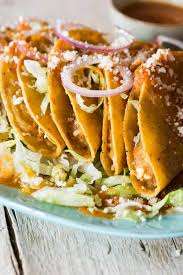

Tacos de Papas
Crispy Corn Torilla Tacos with Cheese
This quick and simple meal is made with buttery potatoes, green onions, and delicious salsa verde.
Crumbled cotija cheese and shredded cheddar bring the flavors together.
Ingredients
- 2 cups water
- 1 (4 ounce) package instant mashed potatoes
- 1/2 cup schredded cheddar cheese
- 1 green onion, chopped
- 1/2 tsp. ground cumin
- 10 corn tortillas
- 1 serving nonstick cooking spray
- 1/2 cup salsa verde
- 1/4 cup crumbled cotija cheese
Steps
- Heat water in a medium saucepan to boiling. Remove from the heat and stir in insyant mashed potatoes and let stand 5 minutes. Stir in cheddar cheese, green onion, and cumin.
- Preheat an air fryer to 400 degrees F (200 degrees C)
- Wrap tortillas in a damp paper towel and microwave on high until warm, about 20 seconds
- Spread 1 tablespoon potato mixture in the center of a tortilla and fold over to make a taco. Repeat with remaining tortillas.
- Working in batches, place tacos in the basket of an air fryer. Spray the tops with cooking spray and cook until crispy, about 5 minutes. Transfer to a serving platter and repeat to cook remaining tacos.
- Drizzle salsa verde over tacos and top with cotija cheese.